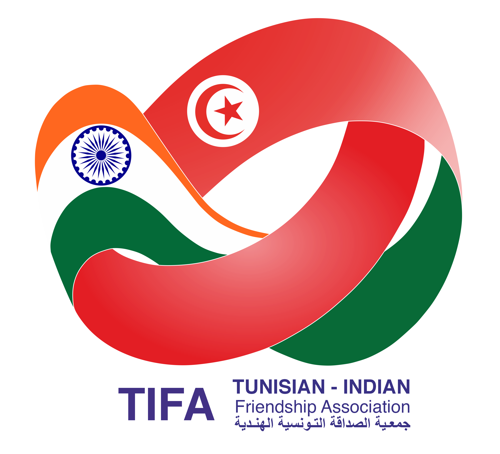
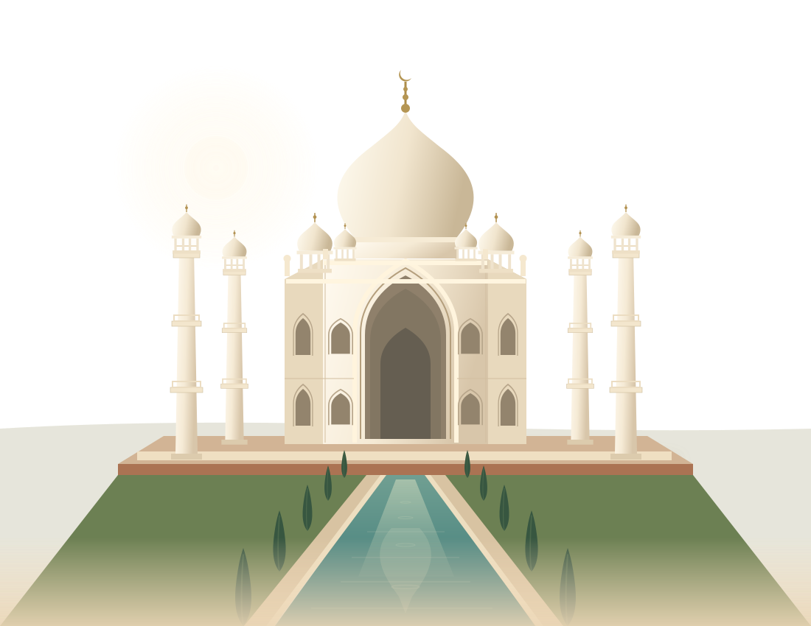

Partager le patrimoine
Faire connaître le patrimoine culturel et historique tunisien en Inde.

TIFA.Amitié Tuniso-IndienneTunisie Inde
Deux cultures, mille façons de se rencontrer.

L’amitié se cultive. TIFA rapproche la Tunisie et l’Inde à travers la culture, les rencontres et la coopération.
Découvrir TIFA01 / L’association
L’Association d’Amitié Tuniso-Indienne œuvre au rapprochement entre les deux pays. Son engagement s’inscrit dans quatre objectifs publiés au Journal officiel de la République tunisienne.
Nos origines et notre cadre associatifFaire connaître le patrimoine culturel et historique tunisien en Inde.
Développer les échanges culturels, techniques et économiques, en coordination avec les autorités compétentes.
Contribuer à la promotion du tourisme tunisien auprès du public indien.
Nouer des relations avec des associations aux objectifs similaires, en Tunisie et à l’international.
Objectifs adaptés de l’annonce de constitution — JORT n° 118 du 9 octobre 2024, référence 2024R02522APSF1.
02 / Nos rencontres
Des moments de dialogue, de transmission
et de découverte entre nos deux pays.
Première sélection de publications vérifiées. Les archives seront enrichies progressivement ; l’accès public à Facebook ne permet pas d’en garantir l’exhaustivité.
03 / Notre histoire
La constitution de l’Association d’Amitié Tuniso-Indienne est publiée au Journal officiel le 9 octobre 2024. La page TIFA retient cette même date comme date de fondation.
Son objet culturel et ses objectifs dessinent un cadre commun : valoriser le patrimoine tunisien, encourager la coopération et créer des liens entre les deux pays.
04 / Les fondateurs
Les cinq fondateurs et leurs fonctions,
tels que publiés au Journal officiel en 2024.
Composition fondatrice publiée au JORT. La composition actuelle du bureau sera précisée à réception d’un document actualisé de l’association.
05 / Regards croisés
Photographies publiées par TIFA.
Chaque image garde le lien avec sa rencontre.
06 / Restons en lien
Une question, une idée de coopération ou l’envie de rejoindre l’association ?
Contactez directement TIFA.